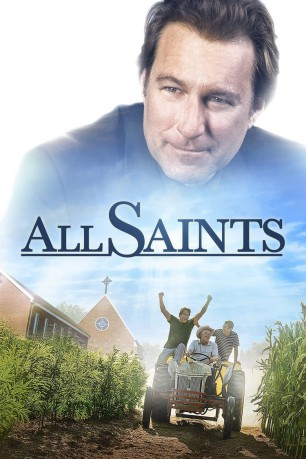

#8635 All Saints
 gesehen am 11.04.2018
gesehen am 11.04.2018
 
 IMDB-Wertung: 5.9 / 10
IMDB-Wertung: 5.9 / 10  Tomatometer: 94
Tomatometer: 94  Metascore: 63
Metascore: 63 
Nachdem er seinen Wirtschaftsjob aufgegeben hat, um Priester zu werden, ist die erste Gemeinde von Michael Spurlock All Saints.Aber die Sache hat einen Haken: Er ist derjenige, der die Kirche für immer schließen und das Land, auf dem sie steht, gewinnbringend verkaufen soll. Während sich Bieter um das Land streiten und die kleine Gemeinde mit ihrem Schicksal hadert, planen Michael und seine Familie schon ihren Umzug in eine größere Gemeinde. Doch als All Saints beginnt, Flüchtlinge aus Burma aufzunehmen, sieht sich der Priester mit einer neuen Mission beauftragt. Er versucht, den Einwanderern zu einem frischen Start in den Vereinigten Staaten zu verhelfen. Und auch er selbst muss sich bald zwischen zwei Fronten entscheiden: Bleibt er bei seiner Gemeinde, hilft den alten und den neuen Mitgliedern, oder erfüllt er doch seine Aufgabe, verkauft das Land der Kirche und setzt seine Priester-Karriere in einem größeren Ort fort?
Jahr: 2017
Dauer: 108 Minuten
FSK: 0
Land: USA Studio: Columbia PicturesTonspuren:
Untertitel:
Auflösung: 720p (1280x536) Größe: 2129 MB
Genre: Drama
Regisseur: Steve Gomer
Drehbuch: Steve Armour
Soundtrack: John Mock
Darsteller:
 John Corbett als Michael Spurlock
John Corbett als Michael Spurlock Cara Buono als Aimee Spurlock
Cara Buono als Aimee Spurlock- Myles Moore als Atticus Spurlock
 Barry Corbin als Forrest
Barry Corbin als Forrest- Nelson Lee als Ye Win
- Angela Fox als Mary-O
 Gregory Alan Williams als Bishop Thompson
Gregory Alan Williams als Bishop Thompson- Jenne Kang als Mya
 David Keith als Boyd
David Keith als Boyd Todd Truley als Jack Harlowe
Todd Truley als Jack Harlowe John Newberg als Owen
John Newberg als Owen- Jessejames Locorriere als Selby
- Gary Willis als John Junior
- Mike Parker als Father Barr
- Patrick Johnson als Father Jeffers
- Debra Lynn Rogers Welborn als Mrs. Harlowe
- Chonda Pierce als Ruth
- Mitch Miller als Chef Gerrard
- Ian Quinn als Itchy Cop
- Staley Colvert als Civic Club President
- Dupree Young als Harlowe Driver
- Ivan Leung als Translator
 Lucie Carroll als Civic club member (uncredited)
Lucie Carroll als Civic club member (uncredited)- Kerry Graul als Church Member (uncredited)
- Karen B. Greer als Church Member (uncredited)
- Melissa Nyenhuis als Realtor (uncredited)
- Ruth Ann Stillman als Civics Club Member (uncredited)
- Jeffrey Wilkerson als Civic Club Member (uncredited)
- John Wise Win als Po
- Stevie Ray Dallimore als Principal
- Mu Kuu als Cho-Cho
- Christ Paw als Karen Farmer #1
- Marissa Martinez als Antique Shop Woman
- Kate Forbes als Welfare Lady
- LaDaveon Burford als Impound Lot Worker (uncredited)
- Steve Crawford als Church Member (uncredited)
- Billy H. Goodman als Core Church Group Member (uncredited)
- Nancy P. Goodman als Core Church Group Member (uncredited)
- Thomas L. Jackson als Church Goer (uncredited)
- Susie Monick als Core Church Lady (uncredited)
- Cole Morse als Chef's Assistant (uncredited)
- Jeromy Nichols als Antique Store Shopper (uncredited)
- Edward Parker als Feedstore Worker (uncredited)
- Monty Powers als Church Member (uncredited)
- Randy Razook als Background Priest (uncredited)
- Chuck Shaw als Core Church Group Member (uncredited)
Datei: X:\2017(A-F)\All Saints (2017, FSK0, 1280x536).mkv seit 11.04.2018
Festplatte: HD 2017(A-Z)-2018(A-F)
 Es gibt insgesamt 152 Filme in der Gruppe '2017(A-F)'
Es gibt insgesamt 152 Filme in der Gruppe '2017(A-F)'